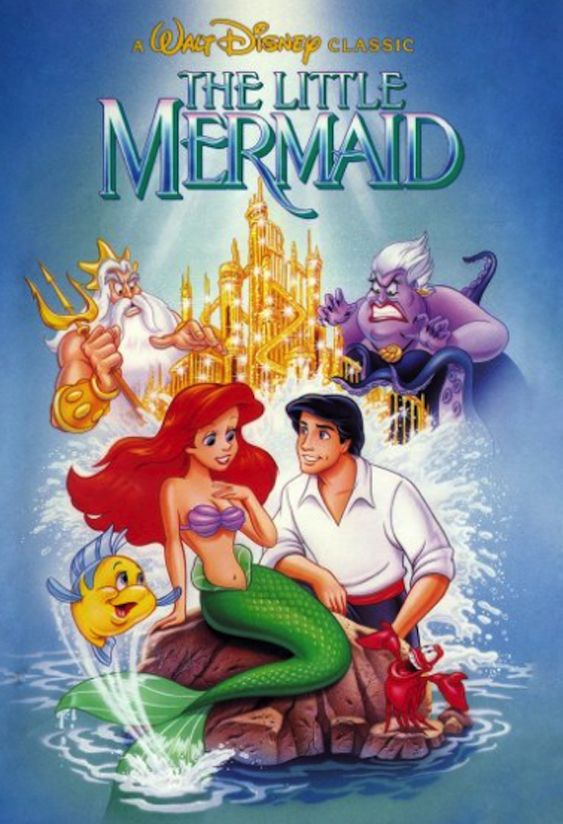

The Little Mermaid
Once upon a time, in the depths of the ocean, there lived a young mermaid princess named Ariel. She was fascinated by the world above the sea and collected human artifacts that sank to the ocean floor. Despite her father, King Triton's, warnings about the dangers of the human world, Ariel's curiosity was insatiable.
One day, Ariel saved a human prince from drowning during a storm. She fell in love with him and longed to be part of his world. Desperate to become human, Ariel visited Ursula, the sea witch. Ursula agreed to grant her wish, but in exchange, Ariel had to give up her beautiful voice. If she did not win the prince's love and receive a kiss from him within three days, she would turn back into a mermaid and belong to Ursula forever.
Ariel agreed and drank a potion that transformed her tail into legs. She swam to the shore and was found by the prince, who was enchanted by her beauty but unaware that she was the one who had saved him. Unable to speak, Ariel struggled to win his heart. Despite her efforts, the prince was about to marry another woman, believing she was the one who had saved him.
On the third day, just as the sun was setting, Ariel's friends discovered that the woman the prince was about to marry was Ursula in disguise. They disrupted the wedding, revealing Ursula's true identity. The prince realized that Ariel was his true savior and kissed her just in time, breaking the spell.
Ursula, enraged, transformed into a giant sea monster and tried to destroy Ariel and the prince. With the help of her friends and her father, Ariel defeated Ursula, and peace was restored to the ocean. King Triton, seeing Ariel's love for the prince, used his trident to turn her into a human permanently.
Ariel and the prince were married, uniting the worlds of land and sea. They lived happily ever after, with Ariel's family and friends visiting often, and the young mermaid finally living her dream of being part of the human world.